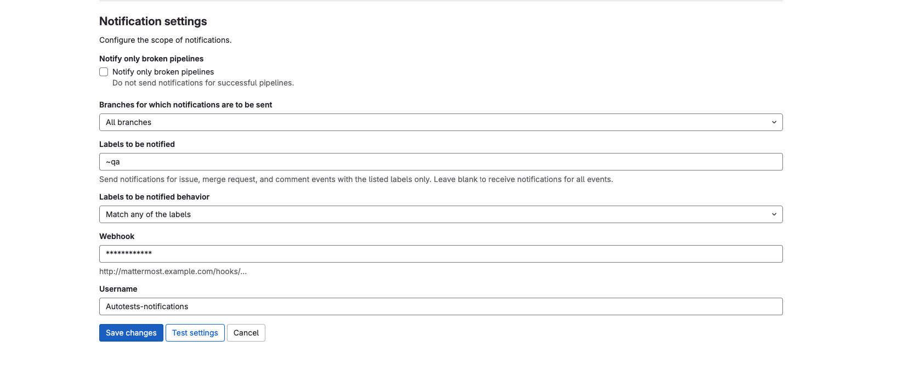
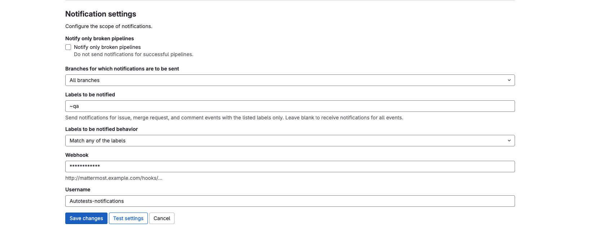

GitLab

Функциональность
Схлопнем коммиты.
Зачастую, наши мелкие коммиты по типу "покрасил кнопку в красный" помогают ревьюерам и теряют ценность когда необходимо вливать пулреквест. Для этого мы можем легко схлопнуть их в один целостный понятный коммит.
Для начала, используем команду git cherry -v master которая покажет разницу между текущей веткой и мастером. В результате увидим 4 коммита, которые мы схлопнем в один
Перепишем историю с момента 4 коммита назад, используем команду ` i - в данном случаем интерактивный режим.
 

Почта
Почтовый клиент Sogo
GitFlow
Gitflow — это популярная методология управления ветками в Git, разработанная Винсентом Дриссеном. Она помогает упорядочить процесс разработки, предоставляя четкие правила для создания и слияния веток.
Основные элементы Gitflow:
Основные ветки:
main(master): стабильная версия, готовая для выпуска;
develop: последняя версия кода с новыми функциями и исправлениями, предназначенная для тестирования.
Поддерживающие ветки:
feature создаются для разработки новых функций. Ветви feature создаются от develop и после завершения сливаются обратно в develop;
release: используются для подготовки новой версии. Ветви release создаются от develop и после завершения сливаются в main и develop;
hotfix: предназначены для экстренного исправления багов в main. Ветви hotfix создаются от main и после завершения сливаются в main и develop.
Основной принцип Gitflow — четкое разделение кода на этапы разработки, тестирования и релиза, что облегчает совместную работу и управление проектом.
Gitlog
Для просмотра истории коммитов достаточно использовать команду git log
Добавив флаг -p можно увидеть разницу (выводит патч), внесённую в каждый коммит.

Интеграция Mattermost - GitLab
Чтобы реализовать систему уведомления в канал Mattermost необходимо знать специальный ключ канала - webhook. Прописав его в репозитории в области интеграции получаем рабочие уведомления в рабочий канал.

Интеграция YouTrack - GitLab
Для быстрого нахождения интересующей ветки разработки в системе GitLab по задаче из YouTrack была реализована интеграция